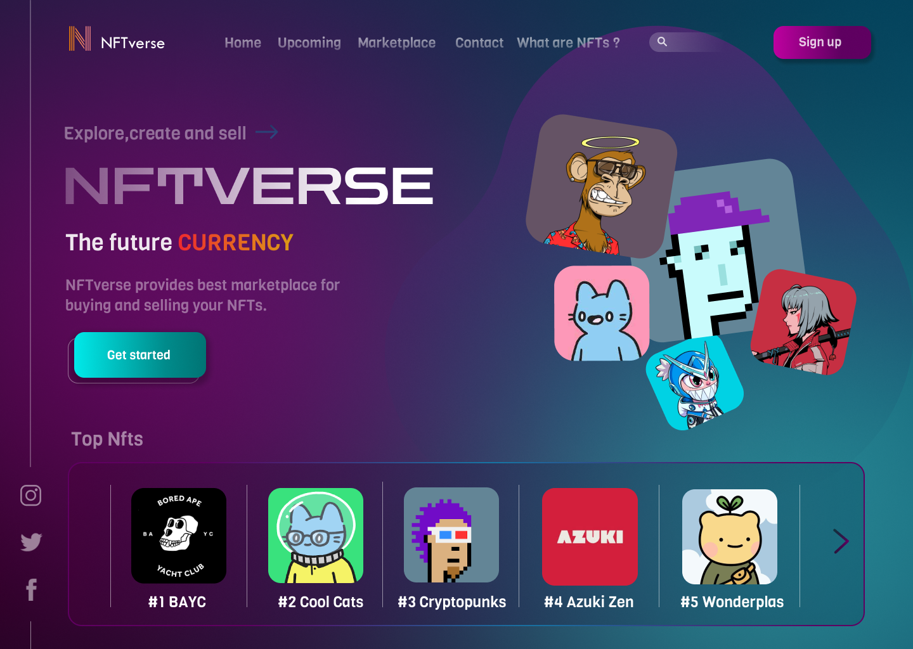
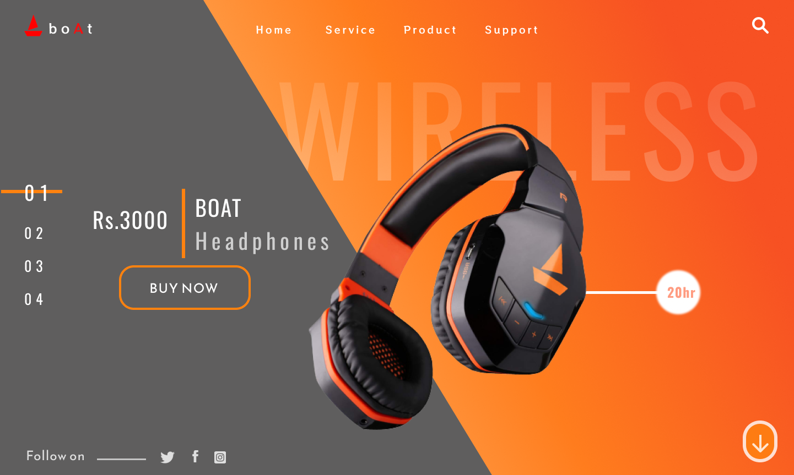
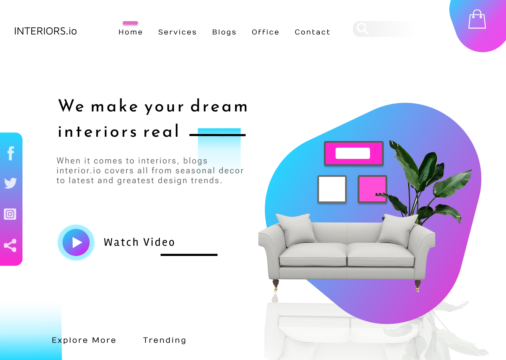
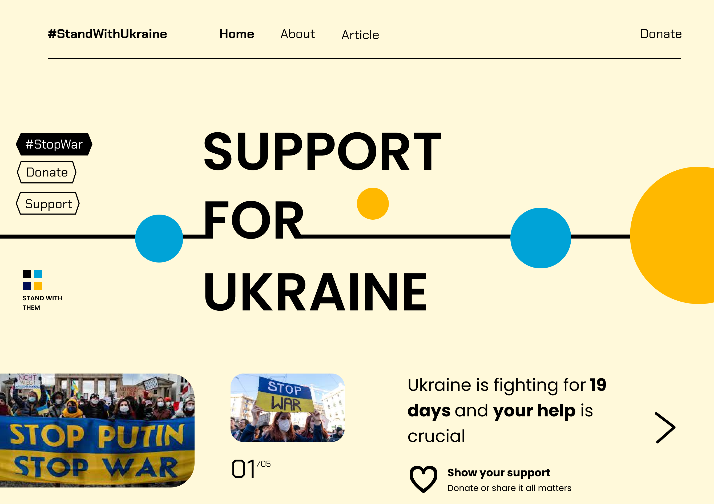
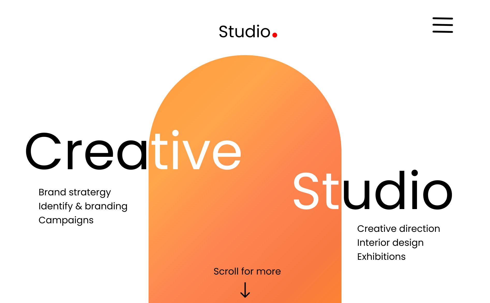
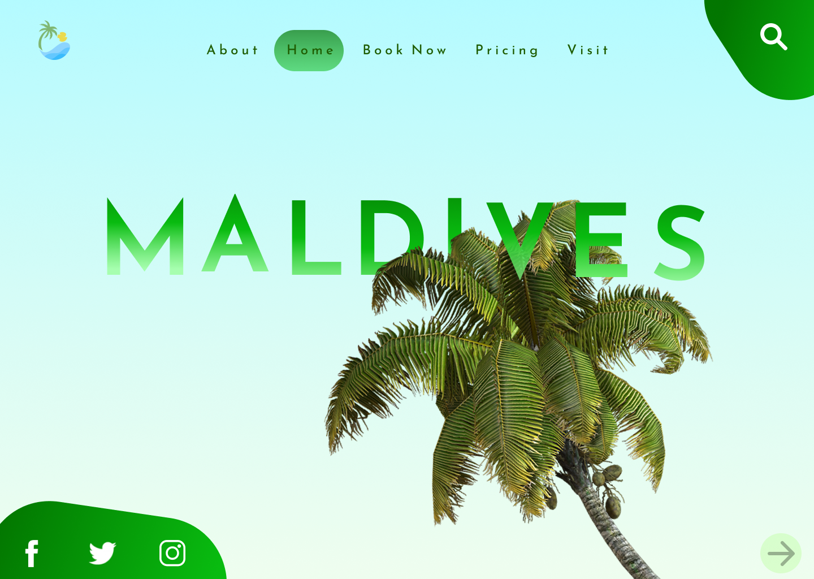

The main part of whole Nft world is a Nft marketplace , And the user of the marketplace will always look for convnience over how the market place would look,And because of this reason I have come up with a UI fo Nft marketplace with super easy navigation and make user comfortable to use the website/app.
The motivation for building this type of UI revovles around the young generation , Here I have designed the page in a way which will have a Gen-z vibe , I tried to display features in as unique way as possible.As a UI/UX designer a orange color scheme is a bold color scheme but I tried to make it as subtle as possible.
In todays world as most the things have become digital so is the interior design industry,The only work which is done person to person in the interior design industry is the actual construction the stages before them are all digital ,So here I have created a design for Interior design website with keeping all the things relevant and focused to interior design and my aim while designing was that the user should recognize that this is a Interior design website in first few seconds.
Year 2022 has been no good for Ukraine as they were attacked by Russia which eventually resulted in loss of lifes.And to support Ukraine and it's people I developed a design for fund gathering,donations and support of any kind to Ukranian people.Here I have kept the UI simple and only used colors from the Ukranian flag and my main motive was that people donate as much as they can so I added donate links in more amount than usual but made sure it doesn't look overwhelming.
I created this UI with a scenario that this is a well established company and most of the people in brandimg industry know this company ,So here I focused more on the minimalistic approach and kept the landing page very simple.
Maldives a location where people go and enjoy there vacations ,When we here maldives we see ocean ,palm trees and beach ,And because of these resons I created a landing page which will definitely give you holiday vibes .
{kind=link}
{kind=link}
{kind=link}
{kind=link}
{kind=link}
{kind=link}